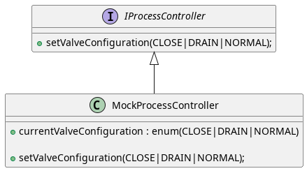

Testing ControlEngines
Testing Services
The proposed pattern excellently facilitates testing of individual services and service procedures.
Tip
Assurances…
Testing each service as described here will enable you to cover every behavior as put forth in a methodic the service description. After these tests pass, you can rely on the fact that your procedure callbacks and service handlers simply work as specified.
A typical test rig would look like this:
![@startuml
abstract testing::Testsuite
abstract ServiceHandlerTestuite extends testing::Testsuite {
service : mtp::Service
+ bringUpService()
+ selectProcedure()
}
class ServiceHandler {}
note left of ServiceHandler
Actual
"Unit under Test"
end note
ServiceHandlerTestuite .. ControlEngine : provides\nelements of
abstract MockServiceHandler extends ServiceHandler
{
getService() : mtp::Service
}
abstract MockProcessController extends ProcessController
note right of ProcessController
Only relevant as interface;
functional code is not used.
end note
note right of MockProcessController
Hides each process
function used by service handlers
and lets tests inspect the process.
end note
class Testsuite extends ServiceHandlerTestuite
{
serviceHandler : MockServiceHandler
process : MockProcessController
+testCreateDestroy()
+testInitialConditions()
+testCommandEnables()
+testProcedure_X_normal()
+testProcedure_X_errorHold()
+testProcedure_Y_normal()
+testProcedure_Y_errorHold()
}
MockServiceHandler -* Testsuite
Testsuite *- MockProcessController
@enduml](../../_images/plantuml-58d6c0d27f194af542b81b0ba66a6ddc887e1f5c.png)
Your ServiceHandlerHandlerTestuite is derived from whatever your test framework uses to create a test suite. It provides elements that would normally be provided by the CE, e.g. the mtp, valves and other common DataAssemblies. Thanks to loose coupling, the ServiceHandler will not care where these elements come from as long as they are dependency injected, so the ServiceHandlerHandlerTestuite does not have to specialize the CE.
The MockProcessController and ServiceHandlerHandlerTestuite would be shared among your services, so they are reusable. The reusablity of MockServiceHandler depends on how much your handlers tend to deviate from each other.
Tip
Going ‘interface first’
TDD of the service handlers will reliably create the required MTP/Process interface specification before you get started on the actual ProcessController.
What to test
Usual service tests tend to go something like like this:
Test if you can instantiate your service. This tends to be the first test to write in TDD.
Test initial condition, specifically
Default controllers and state (Off, Op, Aut) for Serviceparameters
Default controllers and state (Off, Op, Aut) for Procedureparameters
Default controllers for the Service itself
Test command enables: Your service will probably contain logic that activates/deactivates
transitions; e.g. disabling the “START”-Command on errors. This test toggles the process side inputs and tests the active service transitions. You can get to the service-class hidden inside the MTP using MockServiceHandler.
Test a “nominal” flow of the service and test that your service reacts accordingly in each step
Set Configuration Parameters
“Up” the service
Set Procedure Parameters
Start the Procedure
Complete the procedure or inspect self-completing
Reset the procedure
Optional: Most services will include a “if error in EXECUTE, then go to HOLD”-logic. Test EXECUTE reacts to error conditions.
Is the state HOLDING/HELD reached? (does the Service grab control)
Is control of the service returned to the POL after reaching HELD?
Can UNHOLD be triggered when the error disappears?
Repeat the last 2 steps for each procedure.
Mocking process controllers
Mocking process controllers is rather simple: Simply create a mock process controller based on the expected interface.
By providing public “mock” process variables, tests can easily influence the process state, while any changes effected by the Control Engine can easily be inspected.
Here’s a simple example of a ProcessController that is supposed to control 4 binary valves based on certain, preselected configurations:

Continuing the above example, the test for a service or service handler can inspect the state of the valves in IDLE, STARTING and EXECUTE and inspect if the service has set the desired configuration. The test could also change the configuration if the service is expected to react to it, e.g. as an error.
Tip
Avoid mocking process functionality
Mocking the process controller as an interaction/test point for services handlers tests if the service handlers instruct the process correctly and if they react to changes in the process as expected.
Avoid mocking/simulating the process itself: Your knowledge and understanding of the process may be lacking or incomplete; this will result in testing the correct behavior of your simulation, not the service handler.
If something like this is desired, create a separate, dedicated process simulation testsuite. This will allow your service handler tests to give you the confidence that the service logic is correct before interacting with process behavior.